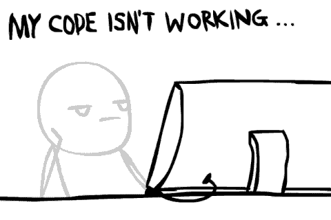

Create a simple project that uses JavaScript to manipulate the DOM. This can be as simple as a script that changes the style of an element, or something much more complicated if you feel like delving deeper.
A stretch goal might be figuring out how to create new HTML elements with JavaScript and add them to your page, or how to loop through a collection of nodes of a certain class and apply the same effect to all of them.)
You don't have to do anything special to delay the DOM manipulation -- it can run right away.
But wait!